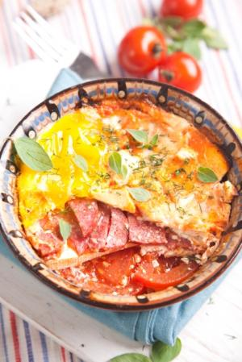

Необходими продукти:
- 1 Глава кромид
- 2 с. л. олио
- 2 домата
- 300 г сирене
- 1 щипка чубрица
- 5-6 зърна черен пипер
- кимион на вкус
- 1/2 щафета шпек
- 2-4 с. л. доматено пюре
- 2 яйца
Приготвяне:
- За рецептата "Бързи гювечета в микровълнова фурна" в
гювечето се нареждат кромидът, нарязан на филии,
поръсва се с малко олио и отгоре се слага ред домати,
нарязани на филийки, и ред сирене - на плочки с дебелина
около половин сантиметър.
- Подправя се и се нарежда ред колбас, нарязан на дребни ленти. Завършва се със сирене.
Залива се с доматеното пюре, разредено със 100 мл вода.
-
Микровълновата фурна се включва два пъти за по десет минути.
Накрая се чуква по едно яйце отгоре и гювечетата се пекат още десет минути.